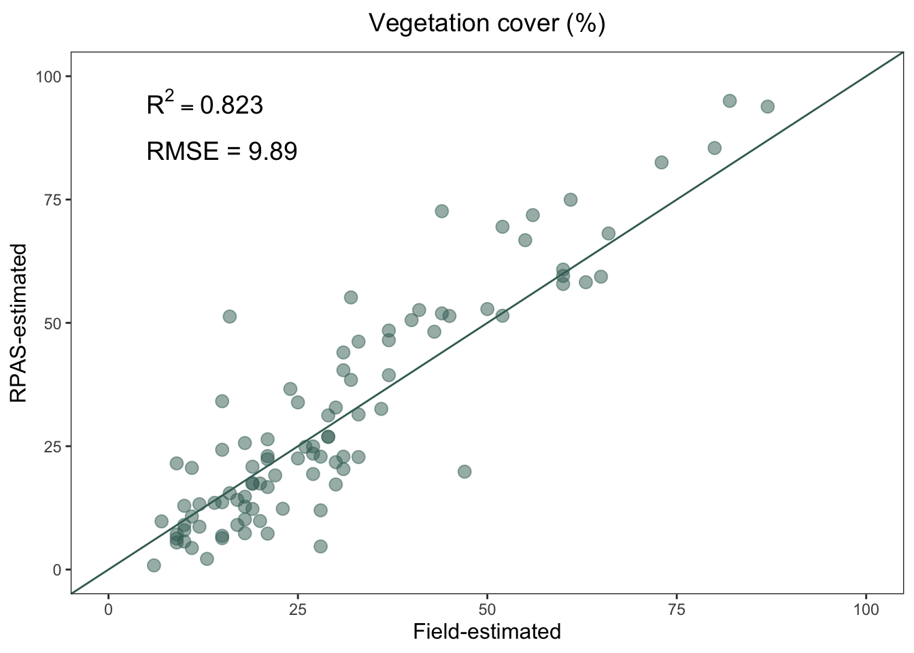
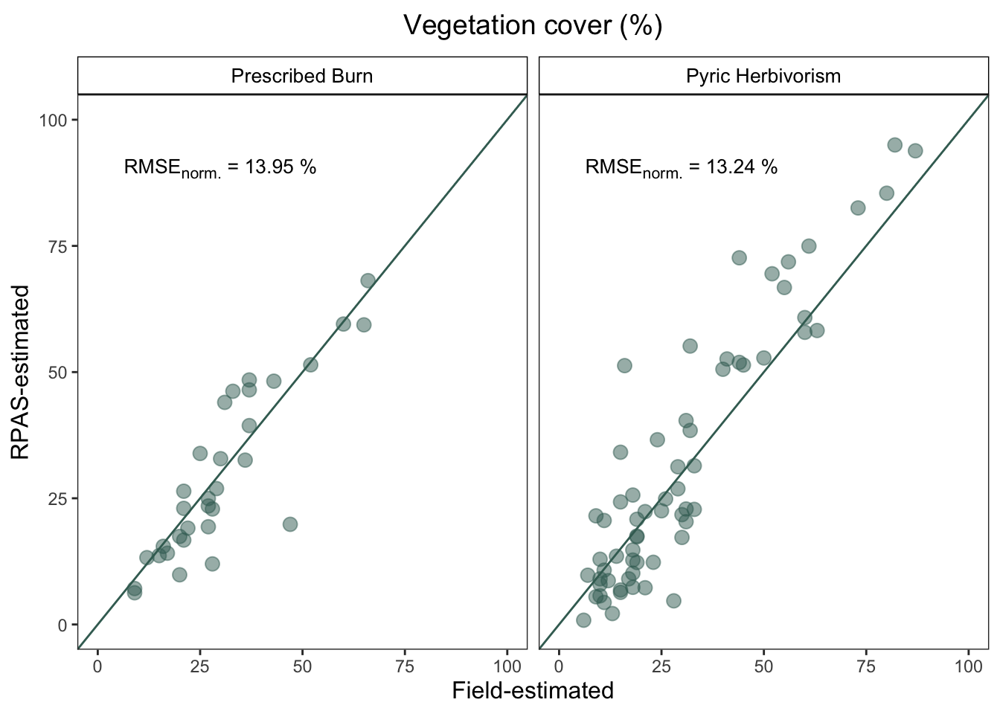
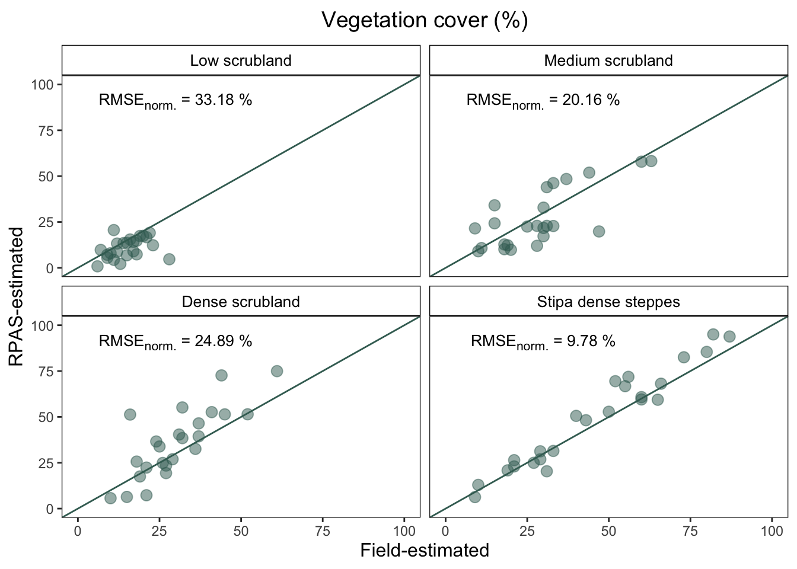
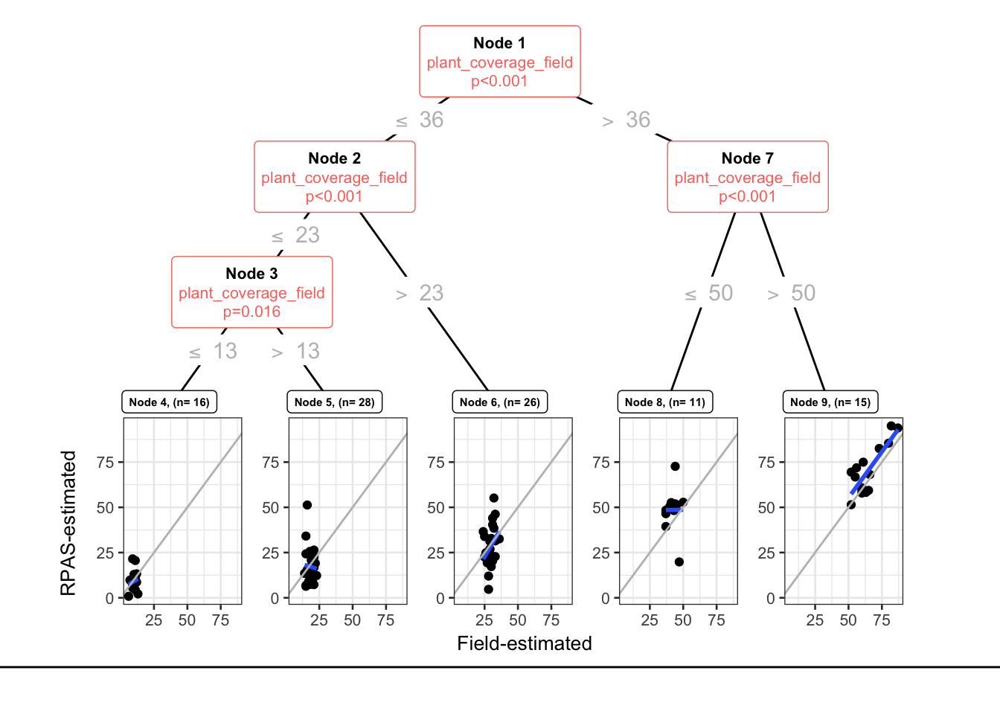
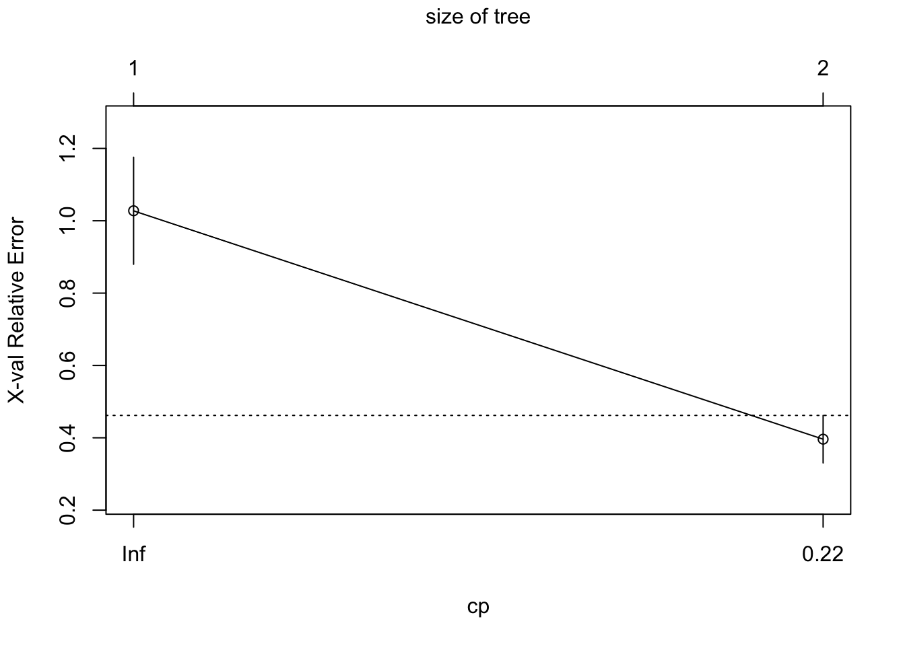

Code
source('scripts/99-pkgs.R')source('scripts/99-pkgs.R')df <- read_excel(path=here::here("data/rpasfield_alcontar.xlsx"),
sheet = "alcontar") Explore the correlation between plant cover estimated by RPAS (RPAS-estimated vegetation cover) and estimated by field measures (Field-estimated vegetation cover)
Compute the RMSE (Root Mean Squared Error) and the normalized RMSE
df.rmse_global <- df %>%
summarise(rmse = round(
Metrics::rmse(plant_coverage_field, plant_coverage_rpas),4),
min = min(plant_coverage_field),
max = max(plant_coverage_field),
rmsen.minmax = rmse / (max(plant_coverage_field) - min(plant_coverage_field))*100)df.rmse_global %>% kbl(
col.names = c("RMSE","min","max","norm. RMSE (%)"),
digits = 2) %>%
kable_material()| RMSE | min | max | norm. RMSE (%) |
|---|---|---|---|
| 9.89 | 6 | 87 | 12.21 |
# https://stackoverflow.com/questions/17022553/adding-r2-on-graph-with-facets
lm_eqn = function(df){
m = lm(plant_coverage_rpas ~ plant_coverage_field, df);
eq <- substitute(r2,
list(r2 = format(summary(m)$r.squared, digits = 3)))
as.character(as.expression(eq));
}verde_claro <- "#c6ddb3"
verde_oscuro <- "#3e6c62"
ylab <- "RPAS-estimated"
xlab <- "Field-estimated"
# See https://stackoverflow.com/questions/65076492/ggplot-size-of-annotate-vs-size-of-element-text
# Custom theme
theme_rpas <- function(){
theme_bw() %+replace%
theme(
plot.title = element_text(size=14,
margin = margin(0,0,10,0)),
panel.grid = element_blank(),
axis.title = element_text(size = 12),
# For panels
strip.background = element_rect(fill="white"),
strip.text = element_text(size = 10,
margin = margin(5,0,5,0))
)
}general_plot <- df %>%
ggplot(aes(x=plant_coverage_field, y = plant_coverage_rpas)) +
geom_point(size=3, alpha=.5, colour=verde_oscuro) +
geom_abline(slope=1, colour=verde_oscuro) +
labs(x = xlab, y = ylab,
title = "Vegetation cover (%)") +
xlim(0,100) + ylim(0,100) +
annotate("text", x= 5, y = 95,
label =paste0("R^2 == ", lm_eqn(df)),
parse = TRUE,
colour = "black",
size = 14/.pt,
hjust = 0) +
annotate("text", x= 5, y = 85,
label = paste0("RMSE = ", round(df.rmse_global$rmse, 2)),
colour = "black",
size = 14/.pt,
hjust = 0) +
theme_rpas()
general_plot
df.rmse_treatment <- df %>%
group_by(treatment) %>%
summarise(rmse = round(
Metrics::rmse(plant_coverage_field, plant_coverage_rpas),4),
min = min(plant_coverage_field),
max = max(plant_coverage_field),
rmsen.minmax = rmse / (max(plant_coverage_field) - min(plant_coverage_field))*100)df.rmse_treatment %>% kbl(
col.names = c("Treatment", "RMSE","min","max","norm. RMSE (%)"),
digits = c(0,2,0,0,2)) %>%
kable_material()| Treatment | RMSE | min | max | norm. RMSE (%) |
|---|---|---|---|---|
| Prescribed Burn | 7.95 | 9 | 66 | 13.95 |
| Pyric Herbivorism | 10.73 | 6 | 87 | 13.24 |
eqns <- by(df, df$treatment, lm_eqn)
df.label <- data.frame(eq = unclass(eqns), treatment = names(eqns))
df.label$lab = paste(df.label$treatment, "R^2 =", df.label$eq, sep=" ")
r2_labeller <- function(variable,value){
return(df.label$lab)
}treatment_plot <- df %>%
ggplot(aes(x=plant_coverage_field, y=plant_coverage_rpas)) +
geom_point(size=3, alpha=.5, colour=verde_oscuro) +
geom_abline(slope=1, colour=verde_oscuro) +
facet_wrap(~treatment, labeller = label_value) +
labs(x = xlab, y = ylab, title = "Vegetation cover (%)") +
xlim(0,100) + ylim(0,100) +
theme_rpas() +
theme(legend.position = "none") +
geom_richtext(data = df.rmse_treatment, size=10/.pt,
aes(x = 30, y = 90,
label = paste0(
"RMSE<sub>norm.</sub> = ",
round(rmsen.minmax,2), " %")),
fill = NA, label.color = NA)
treatment_plot
df.rmse_groups <- df %>%
group_by(cover_type) %>%
summarise(rmse = round(
Metrics::rmse(plant_coverage_field, plant_coverage_rpas),4),
min = min(plant_coverage_field),
max = max(plant_coverage_field),
rmsen.minmax = rmse / (max(plant_coverage_field) - min(plant_coverage_field))*100)df.rmse_groups %>% kbl(
col.names = c("Cover type", "RMSE","min","max","norm. RMSE (%)"),
digits = c(0,2,0,0,2)) %>%
kable_material()| Cover type | RMSE | min | max | norm. RMSE (%) |
|---|---|---|---|---|
| High-cover alfa grass steppe | 7.63 | 9 | 87 | 9.78 |
| High-cover shrubland | 12.69 | 10 | 61 | 24.89 |
| Low-cover shrubland | 7.30 | 6 | 28 | 33.18 |
| Medium-cover shrubland | 10.89 | 9 | 63 | 20.16 |
eqns <- by(df, df$cover_type, lm_eqn)
df.label <- data.frame(eq = unclass(eqns), treatment = names(eqns))
df.label$lab = paste(df.label$cover_type, "R^2 =", df.label$eq, sep=" ")
r2_labeller <- function(variable,value){
return(df.label$lab)
}custom_order <- c("Low scrubland", "Medium scrubland",
"Dense scrubland", "Stipa dense steppes")
covertype_plot <- df %>%
ggplot(aes(x=plant_coverage_field, y=plant_coverage_rpas)) +
geom_point(size=3, alpha=.5, colour=verde_oscuro) +
geom_abline(slope=1, colour=verde_oscuro) +
facet_wrap(~factor(cover_type, custom_order),
labeller = label_value) +
labs(x = xlab, y = ylab, title = "Vegetation cover (%)") +
xlim(0,100) + ylim(0,100) +
theme_rpas() +
theme(legend.position = "none") +
geom_richtext(data = df.rmse_groups, size=10/.pt,
aes(x = 30, y = 90,
label = paste0(
"RMSE<sub>norm.</sub> = ",
round(rmsen.minmax,2), " %")),
fill = NA, label.color = NA)
covertype_plot
combined_plot <- covertype_plot / treatment_plot +
plot_layout(heights = c(2,1)) +
plot_annotation(tag_levels = 'a') &
theme(plot.tag = element_text(face= 'bold'))Is the relationship between the vegetation coverage estimated by RPAS and by field measurement uniform across all coverage values? or is the correlation between those two approach homogeneous across all coverage values?
ct <- partykit::ctree(plant_coverage_rpas ~ plant_coverage_field, data=df)
ct
Model formula:
plant_coverage_rpas ~ plant_coverage_field
Fitted party:
[1] root
| [2] plant_coverage_field <= 36
| | [3] plant_coverage_field <= 23
| | | [4] plant_coverage_field <= 13: 9.150 (n = 16, err = 498.4)
| | | [5] plant_coverage_field > 13: 17.207 (n = 28, err = 2433.9)
| | [6] plant_coverage_field > 23: 28.322 (n = 26, err = 2998.9)
| [7] plant_coverage_field > 36
| | [8] plant_coverage_field <= 50: 48.571 (n = 11, err = 1550.7)
| | [9] plant_coverage_field > 50: 70.347 (n = 15, err = 2566.3)
Number of inner nodes: 4
Number of terminal nodes: 5sctest(ct) $`1`
plant_coverage_field
statistic 7.818806e+01
p.value 9.368296e-19
$`2`
plant_coverage_field
statistic 2.791016e+01
p.value 1.270809e-07
$`3`
plant_coverage_field
statistic 5.75223821
p.value 0.01646766
$`4`
NULL
$`5`
plant_coverage_field
statistic 0.1017646
p.value 0.7497222
$`6`
plant_coverage_field
statistic 2.83932243
p.value 0.09198299
$`7`
plant_coverage_field
statistic 1.604824e+01
p.value 6.174895e-05
$`8`
NULL
$`9`
NULLThere are 5 terminal nodes.
ggparty(ct) +
geom_edge() +
geom_edge_label(colour = "grey", size = 4) +
geom_node_plot(gglist = list(
geom_point(aes(x =plant_coverage_field,y = plant_coverage_rpas)),
geom_smooth(aes(x=plant_coverage_field, y=plant_coverage_rpas), method = lm, se = FALSE),
geom_abline(slope = 1, colour = "gray"),
theme_bw(base_size = 10),
xlab(xlab),
ylab(ylab)
),
scales = "fixed",
shared_axis_labels = TRUE,
shared_legend = TRUE,
legend_separator = TRUE,
id = "terminal") +
geom_node_label(aes(col = splitvar),
line_list = list(aes(label = paste("Node", id)),
aes(label = splitvar),
aes(label = scales::pvalue(p.value, accuracy = 0.001,
decimal.mark = ".",
add_p = TRUE))),
line_gpar = list(list(size = 8, col = "black", fontface = "bold"),
list(size = 8),
list(size = 8)),
ids = "inner") +
geom_node_label(aes(label = paste0("Node ", id, ", (n= ", nodesize, ")")),
fontface = "bold",
ids = "terminal",
size = 2,
nudge_y = 0.01) +
theme(legend.position = "none")
What about the overfitting?
ggplot(df, aes(x=plant_coverage_field, y = plant_coverage_rpas)) +
geom_point() +
geom_abline(yintercept = 1) +
geom_smooth(
data = (df %>% filter(plant_coverage_field <= 13)),
aes(x=plant_coverage_field, y = plant_coverage_rpas),
method = "lm") +
geom_smooth(
data = (df %>% filter(plant_coverage_field > 13 & plant_coverage_field <= 23)),
aes(x=plant_coverage_field, y = plant_coverage_rpas),
method = "lm") +
geom_smooth(
data = (df %>% filter(plant_coverage_field > 23 & plant_coverage_field <= 36)),
aes(x=plant_coverage_field, y = plant_coverage_rpas),
method = "lm") +
geom_smooth(
data = (df %>% filter(plant_coverage_field > 36 & plant_coverage_field <= 50)),
aes(x=plant_coverage_field, y = plant_coverage_rpas),
method = "lm") +
geom_smooth(
data = (df %>% filter(plant_coverage_field >50)),
aes(x=plant_coverage_field, y = plant_coverage_rpas),
method = "lm")set.seed(123)
ctrpart <- rpart(plant_coverage_rpas ~ plant_coverage_field, data=df)
ctrpartn= 96
node), split, n, deviance, yval
* denotes terminal node
1) root 96 49813.8800 30.77125
2) plant_coverage_field< 36.5 70 9815.7370 19.49371
4) plant_coverage_field< 23.5 44 3593.3100 14.27727
8) plant_coverage_field< 13.5 16 498.4016 9.15000 *
9) plant_coverage_field>=13.5 28 2433.9300 17.20714 *
5) plant_coverage_field>=23.5 26 2998.9390 28.32154
10) plant_coverage_field< 30.5 16 998.4559 23.88250 *
11) plant_coverage_field>=30.5 10 1180.7530 35.42400 *
3) plant_coverage_field>=36.5 26 7126.2780 61.13385
6) plant_coverage_field< 51 11 1550.7140 48.57091 *
7) plant_coverage_field>=51 15 2566.3220 70.34667 *printcp(ctrpart)
Regression tree:
rpart(formula = plant_coverage_rpas ~ plant_coverage_field, data = df)
Variables actually used in tree construction:
[1] plant_coverage_field
Root node error: 49814/96 = 518.89
n= 96
CP nsplit rel error xerror xstd
1 0.659894 0 1.00000 1.02767 0.147971
2 0.064711 1 0.34011 0.39621 0.065669
3 0.060410 2 0.27540 0.38907 0.061846
4 0.016456 3 0.21499 0.29072 0.047114
5 0.013269 4 0.19853 0.28587 0.046682
6 0.010000 5 0.18526 0.26769 0.046179plotcp(ctrpart)
set.seed(123)
ctrpart2 <- rpart(plant_coverage_rpas ~ plant_coverage_field, data=df, control =
rpart.control(minsplit = 2, cp = .075))
ctrpart2n= 96
node), split, n, deviance, yval
* denotes terminal node
1) root 96 49813.880 30.77125
2) plant_coverage_field< 36.5 70 9815.737 19.49371 *
3) plant_coverage_field>=36.5 26 7126.278 61.13385 *printcp(ctrpart2)
Regression tree:
rpart(formula = plant_coverage_rpas ~ plant_coverage_field, data = df,
control = rpart.control(minsplit = 2, cp = 0.075))
Variables actually used in tree construction:
[1] plant_coverage_field
Root node error: 49814/96 = 518.89
n= 96
CP nsplit rel error xerror xstd
1 0.65989 0 1.00000 1.02767 0.147971
2 0.07500 1 0.34011 0.39621 0.065669plotcp(ctrpart2)
set.seed(123)
ct_ok <- partykit::ctree(plant_coverage_rpas ~ plant_coverage_field,
data = df,
control =
ctree_control(minsplit = 1, alpha = 0.05, maxdepth = 1)
)
plot_party <- ggparty(ct_ok) +
geom_edge() +
geom_edge_label(colour = verde_oscuro, size = 5) +
geom_node_plot(
gglist = list(
geom_point(aes(
x = plant_coverage_field,
y = plant_coverage_rpas
),
size = 3, alpha = .5, colour = verde_oscuro
),
geom_smooth(aes(x = plant_coverage_field, y = plant_coverage_rpas),
method = lm, se = FALSE, colour = "gray"
),
geom_abline(slope = 1, colour = verde_oscuro),
theme_bw(base_size = 10),
xlab(xlab),
ylab(ylab),
theme(
panel.grid = element_blank()
)
),
scales = "fixed",
shared_axis_labels = TRUE,
shared_legend = TRUE,
legend_separator = TRUE,
id = "terminal"
) +
geom_node_label(aes(col = splitvar),
line_list = list(
aes(id),
aes(label = "Vegetation cover"),
aes(label = scales::pvalue(p.value,
accuracy = 0.001,
decimal.mark = ".",
add_p = TRUE
))
),
line_gpar = list(
list(size = 10, col = "black"),
list(size = 10, col = "black"),
list(size = 10, col = "black")
),
ids = "inner",
label.col = verde_oscuro
) +
geom_node_label(aes(label = paste0("n = ", nodesize)),
ids = "terminal",
size = 3,
nudge_y = 0.01
) +
theme(legend.position = "none")
plot_partydf <- df %>%
mutate(cover_vp = case_when(
plant_coverage_field <= 36 ~ as.character("cob_low"),
TRUE ~ "cob_high"
))df.rmse_vp <- df %>%
group_by(cover_vp) %>%
summarise(rmse = round(
Metrics::rmse(plant_coverage_field, plant_coverage_rpas),4),
min = min(plant_coverage_field),
max = max(plant_coverage_field),
rmsen.minmax = rmse / (max(plant_coverage_field) - min(plant_coverage_field))*100)df.rmse_vp %>% kbl(
col.names = c("Groups Variance partitioning", "RMSE","min","max","norm. RMSE (%)"),
digits = c(0,2,0,0,2)) %>%
kable_material()| Groups Variance partitioning | RMSE | min | max | norm. RMSE (%) |
|---|---|---|---|---|
| cob_high | 11.53 | 37 | 87 | 23.07 |
| cob_low | 9.20 | 6 | 36 | 30.68 |
m <- lm(plant_coverage_rpas ~ plant_coverage_field, data=df)
df <- df %>% modelr::add_residuals(m) %>%
mutate(resid.abs = abs(resid))
dfres <- df %>%
mutate(abs.Shannon = abs(shannon)) %>%
dplyr::select(
Shannon = abs.Shannon,
Richness = richness, Slope = slope, resid, resid.abs) %>%
pivot_longer(cols = c("Shannon","Richness", "Slope")) %>%
mutate(variable = fct_relevel(name, c("Shannon", "Richness", "Slope")))p <- ggpubr::ggscatter(dfres,
x = "value", y = "resid.abs",
color = verde_oscuro,
alpha = 0.5,
xlab = "",
ylab = expression(paste("|","Residuals","|")),
add = "reg.line",
add.params = list(color = verde_oscuro, fill = verde_claro),
conf.int = TRUE,
facet.by = "variable"
) +
stat_cor(
label.y.npc="top", label.x.npc = "left",
aes(label = paste(..rr.label.., ..p.label.., sep = "~`,`~")),
color = verde_oscuro, size = 5
) +
theme(text=element_text(
colour = verde_oscuro,
size = 12),
strip.text = element_text(
colour = verde_oscuro,
size = 10),
axis.title = element_text(size = 12))
p.resid <- ggpubr::facet(p,
facet.by = "variable", scales = "free_x",
panel.labs.background = list(fill = "white"),
panel.background = element_blank(),
strip.background = element_blank()
)
p.resid